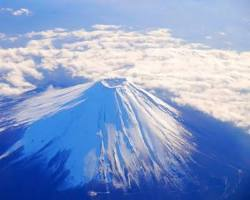

มรดกโลก

มรดกโลก
ในการประชุมคณะกรรมการมรดกโลกครั้งที่ 37 ณ กรุงพนมเปญ ประเทศกัมพูชา องค์การยูเนสโก ได้ประกาศให้ภูเขาไฟฟูจิเป็นมรดกโลกทางวัฒนธรรม ในวันที่ 22 มิถุนายน พ.ศ. 2556 ภายใต้ชื่อ "ฟูจิซัง สถานที่ศักดิ์สิทธิ์และแหล่งที่มาของความบันดาลใจทางศิลปะ" ทำให้ภูเขาไฟฟูจิเป็นมรดกโลกทางวัฒนธรรมแห่งที่ 13 และเป็นมรดกโลกแห่งที่ 17 ของประเทศญี่ปุ่น โดยผ่านหลักเกณฑ์การพิจารณา ดังนี้
(iii) - เป็นสิ่งที่ยืนยันถึงหลักฐานของวัฒนธรรมหรืออารยธรรมที่ปรากฏให้เห็นอยู่ในปัจจุบันหรือว่าที่สาบสูญไปแล้ว
(iv) - เป็นตัวอย่างอันโดดเด่นของประเภทของสิ่งก่อสร้างอันเป็นตัวแทนของการพัฒนาทางด้านวัฒนธรรม สังคม ศิลปกรรม วิทยาศาสตร์ เทคโนโลยี อุตสาหกรรม ในประวัติศาสตร์ของมนุษยชาติ